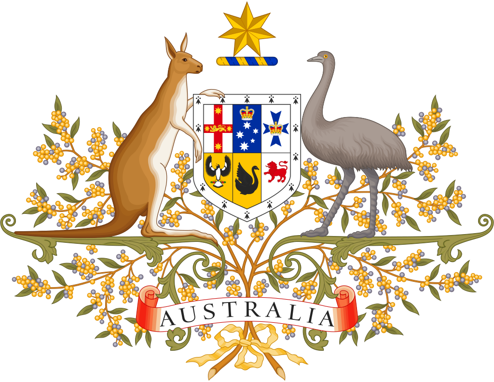

Celkový přehled
Poloha
Austrálie, plným názvem Australské společenství (též Australský svaz, anglicky Commonwealth of Australia), je federativní stát na jižní polokouli nacházející se na stejnojmenném kontinentu. Kromě pevninské části ho tvoří i velký ostrov Tasmánie a množství menších ostrovů v Jižním, Indickém a Tichém oceánu. Na severu sousedí s Indonésií, Východním Timorem a Papuou Novou Guineou, na severovýchodě se Šalomounovými ostrovy, Vanuatu a Novou Kaledonií a na jihovýchodě s Novým Zélandem. Austrálie je největší zemí Oceánie a šestou největší zemí na světě podle celkové rozlohy (7 617 930 kilometrů čtverečních).
Populace
Její populace, skládající se z 26 milionů lidí je vysoce urbanizovaná a vysoce koncentrovaná na východním pobřeží. Hlavním městem je Canberra a největším Sydney. Další důležité městské oblasti v zemi jsou Melbourne, Brisbane, Perth a Adelaide. Austrálci osídlovali Austrálii (kontinent) po asi 65 000 let před prvním příjezdem průzkumníku Spojených provincií nizozemských (dnešního Nizozemska) na začátku 17. století, kteří území pojmenovali jako Nové Holandsko. V roce 1770 si východní část Austrálie vyžádalo Království Velké Británie a původně se usadila tím, že transpontovala trestance do kolonie Nový Jižní Wales od 26. ledna 1788, což je datum, které se stalo australským národním dnem. Populace v následujících desetiletích neustále rostla a v době zlaté horečky v padesátých letech byla většina kontinentu prozkoumána evropskými osadníky a bylo založeno dalších pět samosprávných kolonií koruny. Dne 1. ledna 1901 se šest kolonií federovalo a vytvořilo Australské společenství. Austrálie si od té doby udržuje stabilní liberálně demokratický politický systém, který funguje jako federální parlamentní konstituční monarchie a zahrnuje šest států a deset teritotií.
Kontinent
Austrálie je nejstarší, nejplošší, a nejsušší obydlený kontinent, s nejméně úrodnou
půdou.Má rozlohu
7 617 930 kilometrů čtverečních. Je to velice různorodá země, její
velikost jí dává širokou škálu krajiny a podnebí, s pouští ve vnitrozemí, tropickými deštnými
pralesy na severovýchodě a horskými pásmy na jihovýchodě. Austrálie generuje své příjmy z
různých zdrojů, včetně exportu souvisejícího s těžbou, telekomunikací, bankovnictvím, výrobou a
mezinárodním vzděláváním.
Hospodářství
Austrálie je vyspělý stát s rozvinutým průmyslem a zemědělstvím. Těží se zde uhlí, černé i hnědé, železná ruda, bauxit, ropa, zemní plyn, olovo, zinek, cín, měď, mangan, zlato, stříbro, platina, nikl, diamanty, zirkon, sůl, uran a další nerosty. Významná průmyslová odvětví jsou hutnictví, petrochemie, chemie, strojírenství, výroba elektrické energie, textilní a potravinářský průmysl. Těží se dřevo. Velkou roli hraje doprava a turistický ruch.
Na polích se pěstuje pšenice, ječmen, oves, rýže, cukrová třtina, bavlna, luštěniny, brambory, zelenina, ovoce, vinná réva, chmel, tabák… Z živočišné výroby je nejdůležitější chov ovcí, po něm chov skotu, prasat, koní, drůbeže a rybolov.
Název a státní symboly
Vlajka

Znak
Jak vznikl název Austrálie?
Jméno Austrálie je odvozeno z latinského Terra Australis („jižní země“), název používaný pro hypotetický kontinent na jižní polokouli už od starověku. Když Evropané začali v 17. století poprvé navštěvovat a mapovat Austrálii, název Terra Australis se přirozeně aplikoval na nová území.
Zdá se, že jméno Austrálie bylo oficiálně použito, v dubnu 1817, kdy guvernér Lachlan Macquarie potvrdil přijetí Flindersových map Austrálie od lorda Bathursta. V prosinci 1817 Macquarie doporučil Colonial Office, aby bylo formálně přijato. V roce 1824 se admirálové dohodli, že kontinent by měl být oficiálně znám pod tímto jménem. První oficiální publikované použití nového jména přišlo s vydáním The Australia Directory v roce 1830 Hydrografickou kanceláří.